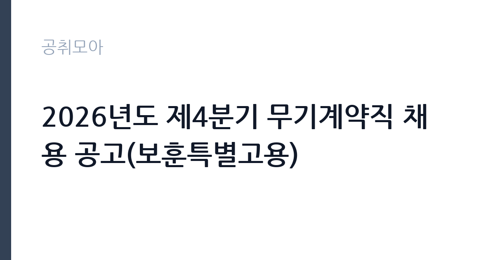

[공공기관] 2026년도 제4분기 무기계약직 채용 공고(보훈특별고용)
한국세라믹기술원 · 충북 · 마감 2026-10-29 (D-15) · 출처 잡알리오

한눈에 보는 모집 조건
| 기관 | 한국세라믹기술원 |
|---|---|
| 공고명 | 2026년도 제4분기 무기계약직 채용 공고(보훈특별고용) |
| 고용형태 | 공무직 |
| 근무지 | 충북 |
| 게시일 | 2026-10-15 |
| 마감일 | 2026-10-29 (D-15) |
지원자격, 이렇게 읽으세요
- 공공기관 채용공시
- 세부 조건은 원문 공고문 확인
지원자격의 핵심은 국가유공자법 제34조 제1항에 따른 경남서부보훈지청의 보훈특별고용 추천 대상자라는 점입니다. 추천을 받지 못하면 지원 자체가 불가하므로, 해당자는 먼저 보훈지청에 추천 가능 여부를 확인하시기 바랍니다. 그 외에 기술원 인사규정 결격사유 미해당과 공무직 운영규칙상 정년 미해당, 남성 병역필 또는 면제, 임용 예정일 즉시 근무 가능이 요건입니다. 채용 분야별 자격과 가점 자격은 원문에서 확인하시기 바랍니다.
이 공고의 포인트
이 공고의 포인트는 정년이 보장되는 무기계약직이라는 점입니다. 계약직과 인턴이 섞인 제4분기 채용 중에서 고용 안정성이 가장 높습니다. 보훈특별고용이라 경쟁 범위가 추천 대상자로 한정되어 일반 전형보다 합격 가능성이 구조적으로 높습니다. 근무지가 충북으로 표기되어 있으니 오송센터 등 충북 거점 근무 가능 여부를 먼저 따져보시기 바랍니다. 추천 절차에 시간이 걸리므로 마감(10월 29일)을 감안해 서둘러 보훈지청에 문의하시기 바랍니다.
전형은 어떻게 진행되나
세부 전형 단계는 원문 공고문에서 확인하셔야 합니다. 보훈특별고용 채용은 추천 확인과 서류심사, 면접으로 진행되는 경우가 일반적입니다. 추천서 등 보훈 관련 증빙이 핵심 서류이므로 유효 기간과 발급 절차를 미리 확인하시기 바랍니다. 임용 예정일은 최종합격자 선발 후 협의합니다.
원문에서 확인한 전형 방식
- 「국가유공자법」 제34조 제1항에 따른 경남서부보훈지청의 보훈특별고용 추천 대상자 - 기술원 「인사 규정」 제7조(결격사유)에 해당하지 않는 자 - 기술원 「공무직 운영규칙」 제6조(정년)에 해당하지 않는 자 - 남성의 경우 병역을 필하였거나 면제된 자 - 임용 예정일에 즉시 근무가 가능한 자(임용 예정일은 최종합격자 선발 후 협의할 예정) - 채용 분야별 자격과 가점 자격은 공고문 참고
이런 분께 추천해요
- 경남서부보훈지청 보훈특별고용 추천 대상자인 구직자
- 정년까지 안정적으로 근무할 공공기관 일자리를 찾는 분
- 충북 거점 근무가 가능한 분
지원 전 체크리스트
- 보훈지청 추천 대상자 해당 여부와 추천 절차를 확인했습니다
- 정년과 병역 등 지원 요건을 충족하는지 확인했습니다
- 채용 분야별 자격과 가점 자격을 원문에서 대조했습니다
- 충북 근무지 출근 가능 여부를 확인했습니다
모집 일정과 제출 타이밍
마감은 10월 29일이지만 보훈지청 추천 절차가 선행되어야 하므로 실질 준비 기간이 짧습니다. 추천이 필요한 분은 즉시 경남서부보훈지청에 문의하시기 바랍니다. 서류 접수 후 면접이 11월 초에 이어질 가능성이 크므로 해당 주 일정은 비워 두시기 바랍니다. 임용 예정일은 합격 후 협의합니다.
직무 이해하기: 공공기관
무기계약직의 배치 직무는 채용 분야에 따라 다르며, 연구지원과 행정지원, 시설과 장비 운영 보조 등이 해당됩니다. 공무직은 해당 직무의 실무를 장기적으로 맡아 기관 운영의 기반을 지탱하는 역할을 합니다. 배치 부서와 직무 내용은 원문 공고문의 분야별 안내에서 확인하시기 바랍니다. 장기 근무가 전제되므로 직무 적응과 숙련 향상이 중요합니다.
자기소개서 작성 팁
보훈특별고용 자기소개서는 직무 수행 의지와 성실함, 장기근무 의지를 보여주는 것이 핵심입니다. 관련 경력이나 자격이 있다면 구체적으로 적어 실무 투입 가능성을 보여주시기 바랍니다. 보훈 대상자라는 점을 구구절절 설명하기보다 앞으로의 기여 계획에 분량을 할애하시기 바랍니다. 가점 자격이 있다면 증빙과 함께 명확히 기재하시기 바랍니다.
면접 준비 포인트
면접에서는 지원 동기와 직무 이해도, 장기근무 의지를 묻는 경우가 많습니다. 배치 예상 직무의 실무 내용을 파악하고 간다는 점을 보여주시기 바랍니다. 공공기관 구성원으로서의 책임감과 보안 의식을 묻는 질문에도 대비하시기 바랍니다. 근무지와 근무 조건에 대한 이해를 명확히 답하시기 바랍니다.
급여·근무조건 읽는 법
이 공고문에는 무기계약직 보수 금액이 명시되어 있지 않으므로, 정확한 보수는 원문 공고문에서 확인하셔야 합니다. 공공기관 무기계약직 보수는 통상 월급제 기본급에 명절휴가비와 정액급식비, 가족수당 등 수당이 더해지는 구조이며 기관별 공무직 운영규칙에 따라 책정됩니다. 참고로 세라믹기술원 정규직의 대졸 초임은 약 3,183만원 수준으로 알려져 있으나(잡코리아 기업정보 기준, 공식 공시 아님), 공무직 보수와는 별개이므로 혼동하지 마시기 바랍니다. 실수령액은 세전 총액에서 4대보험 본인부담금과 소득세를 제외한 금액이 됩니다.
자주 묻는 질문
- 누가 지원할 수 있나요?
경남서부보훈지청의 보훈특별고용 추천 대상자로, 결격사유에 해당하지 않고 정년 미해당, 남성 병역필 또는 면제, 즉시 근무 가능자입니다. - 추천은 어떻게 받나요?
경남서부보훈지청에 보훈특별고용 추천 가능 여부를 문의하시기 바랍니다. 추천 절차에 시간이 걸리므로 마감 전에 서둘러 확인하시기 바랍니다. - 무기계약직은 정규직과 무엇이 다른가요?
무기계약직은 기간의 정함이 없어 정년까지 근무할 수 있는 공무직입니다. 직급 체계와 승진, 임금 테이블은 정규직과 다를 수 있으니 원문에서 확인하시기 바랍니다.
함께 보면 좋은 공고
[공공기관] 2026년 한국도로공사 교통량 조사 기간제 근로자(사무원) 채용공고 — 마감 2026-10-28[공공기관] 2026년도 제4분기 체험형 인턴 채용 공고(장애인 채용) — 마감 2026-10-29[공공기관] 2026년도 제4분기 체험형 인턴 채용 공고(인턴사무원) — 마감 2026-10-29출처: 잡알리오 공개정보를 바탕으로 공취모아가 정리한 안내글입니다. 모집 조건·일정은 변경될 수 있으니 지원 전 반드시 원문 공고문을 확인하세요. 본 글은 정보 제공용이며 합격을 보장하지 않습니다.